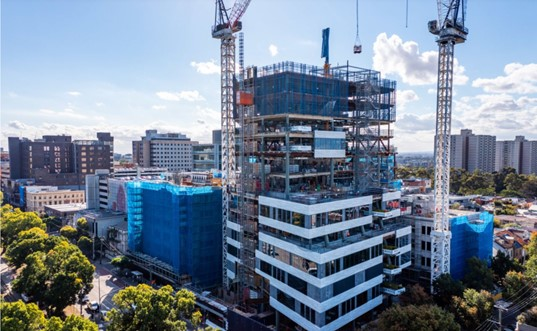
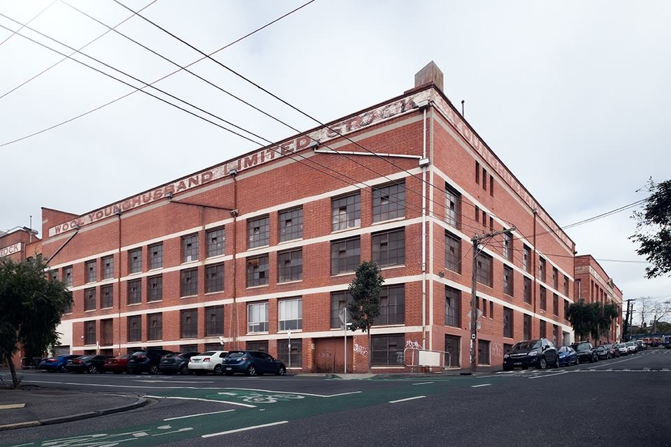
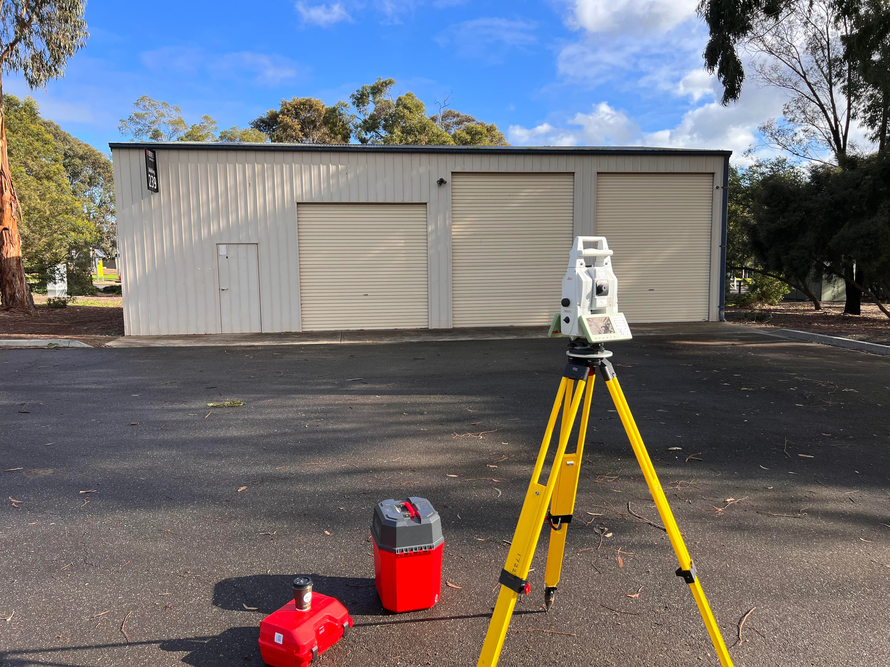
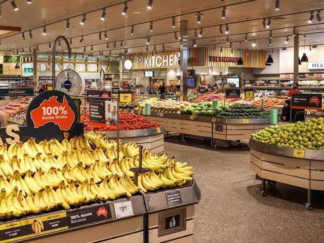

My Career experiences
My working career started at Coles as a part time fresh produce team member, now I am working at Absolute Surveying
in both the construction and cadastral sectors of surevying. Below are some of the experiencs I have gained thoughout my Career.

This was a large 2 day feature survey that ran along the Russell St side of Essendon station. Following the survey a GPS conncetion to GDA2022 was made using some local permanent marks around the area.

I was part of a large survey team that helped bring this project to its completion. I was involed in conducting setout work and height transfers as well as site monitoring work.

The ACU upgrades of the Melbourne city campus are nearing completion. For this site I have been involved in conducting setout work and height transfers as well as beam installation monitoring.

Younghusband is a new on goning site which has just been re-launched post covid. So far I have been involved in the creation of a control network and 3D scanning of both the inside and outside of the building.

In my final year of my studies I conducted my Honors project. It was titled "Performance Evaluation of the iPhone 13 for Outdoor LiDAR and Photogrammetric data collection and processing." The aim of the project was to find out if the iPhone could use its built in LiDAR sensor
to create a point cloud that could be comparable to one produced on a multi-station. The results of my project indicated that the iPhone could produce 3D models to a reletive accuracy of approximetly 30cm,
which is not comparable to a multistation.

I currently have a part time role at Coles Moonee Ponds in the fresh produce department. This is a special store as it received a massive renovation in 2020. I was asked to transfer to the store as the fresh produce second in charge before the renovations commenced.
I was responsible for helping lead a small team to complete our day to day tasks whilst having to adapt to the construction that was happening around us. Since the renovations have been completed this store is a brand new concept store for Coles, demonstrating
all of the new inovations coles has for the supermarket industry.
Thankyou for taking the time to learn about a few of my experiences. If you are interested in hearing more about me, feel free to contact me using the details bellow.